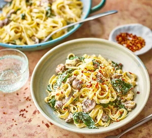

Toss together tagliatelle, mushrooms and spinach in a parmesan and crème fraîche sauce to make a quick and low calorie dinner that takes just 25 minutes.
5 mins
20 mins
Serves 2

Ingredients
2 tbsp olive oil
1 small onion, finely chopped
150g baby mushrooms, halved
150g tagliatelle
2 garlic cloves, crushed
200g low-fat crème fraîche
15g parmesan or vegetarian alternative, grated
120g baby spinach
½ tsp chilli flakes (optional)
Instructions:
Heat the oil in a medium saucepan over a medium heat and fry the onion and mushrooms for 10 mins, or until softened and browned slightly. Meanwhile, cook the pasta following pack instructions.
Add the garlic to the pan with the mushrooms and cook for 2 mins more. Tip in the crème fraîche and parmesan, stir to combine, then add the baby spinach. Set aside.
Remove the pasta from the heat and drain, reserving 25ml of the water. Toss the pasta in the creamy mushroom sauce, put back on the heat and cook over a low heat until the spinach wilts, about 5 mins. Pour in enough of the reserved water to loosen slightly. Season with black pepper and finish with a sprinkle of chilli flakes, if you like.